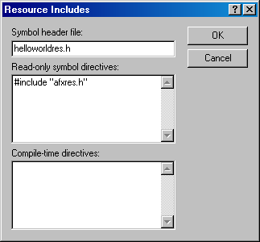
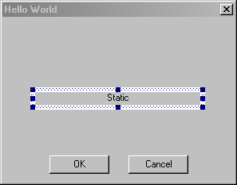
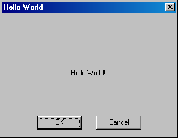

Create a Hello World Dialog
To create a resource-only DLL that is accessible in Origin using Origin C the DLL must be built using Microsoft Visual C++ version 5.0 or higher. Origin Dialog Builder includes an Origin Dialog AppWizard which simplifies the process of creating a resource-only DLL in Microsoft Visual C++. To access this wizard in Microsoft Visual C++, first download this zip file, extract it and then browse to copy the file
ODialog.awx
from the \Dialog Builder\VisualStudio6AppWizard subfolder to the \Common\MSDev98\Template subfolder of Microsoft Visual Studio.
To create a simple "Hello World" dialog in a resource only DLL using Microsoft Visual C++, the Origin Dialog AppWizard, Origin, and the Origin C programming language, follow the steps below.
| Note: Beginning with Origin 2017, Origin C dialogs can be built using HTML and JavaScript. For most users, this will be a better approach than building tools using the older Origin Developer Kit. Building dialogs with the Developer Kit requires the user to create a resource DLL using Visual Studio. This has proven to be a barrier for many, both for development and for distribution. The HTML/JS approach eliminates such complications.
|
Steps 1 - 8: Use the Origin Dialog AppWizard to create a resource
- 1 Start Microsoft Visual C++.
- 2 In Microsoft Visual C++ select the File:New menu item to open the New dialog.
- 3 On the Projects tab, select Origin Dialog AppWizard from the list box and then specify a project name and location in the associated fields. For this tutorial use HelloWorld (without a space) for the project name and a subfolder in the Origin software folder named \HelloWorld (without a space) for the project location. For example, if the project name is HelloWorld the project location might be something like
C:\Program Files\OriginLab\OriginPro75\HelloWorld
- 4 Click OK. The Origin Dialog AppWizard opens in Microsoft Visual C++.
- 5 Select A simple dialog for What kind of Origin Dialog project do you want to create? and click Next.
- 6 Select the Origin C radio button and check the Use classes checkbox for What language will you use to control the dialog? Click Next.Template code to control your dialog will be created for you using the Origin C language and user-defined classes.
- 7 Enter Hello World (with space) for Caption, enter IDD_HW_DLG for Resource ID, enter HelloWorld (without space) for Origin C Name, and then click Finish.
- 8 Peruse and then click OK on the New Project Information dialog. The Origin Dialog AppWizard closes and the Microsoft Visual C++ workspace contains a simple dialog which can be modified as described below.
Steps 9 - 11: Edit the Microsoft Visual C++ project settings
- 9 Select the Build:Set Active Configuration menu item, choose HelloWorld -Win32 Release from Project Configurations, and then click OK to close the Set Active Project Configuration dialog box.
- 10 Select the Project:Settings menu item, select the Link tab in the Project Settings dialog, and then clear and enter HelloWorld.DLL for Output file name. Click OK.
- 11 Select the View:Resource Includes menu item, clear and enter HelloWorldRes.h (without quotes) for Symbol header file, and then clear and enter
#include "afxres.h"
(with quotes) for Read-only symbol directives. If not empty, clear Compile-time directives. Click OK twice.

Steps 12 - 14: Add a Static control to the "Hello World" dialog
- 12 On the ResourceView tab in the Microsoft Visual C++ workspace window expand the [+] next to the HelloWorld resources folder, expand the [+] next to the Dialog folder, and then double-click on the IDD_HW_DLG resource to open the HelloWorld dialog.
- 13 Add a static text object to the HelloWorld dialog by depressing the Static Text button
 on the Controls toolbar and then dragging out a static text object on the HelloWorld dialog. Vertically and horizontally center the static text object by selecting it and then clicking the Center Vertical and Center Horizontal buttons on the Dialog toolbar. If the Controls or Dialog toolbars are not visible right-click on a blank area of the toolbar spacer and enable them.
on the Controls toolbar and then dragging out a static text object on the HelloWorld dialog. Vertically and horizontally center the static text object by selecting it and then clicking the Center Vertical and Center Horizontal buttons on the Dialog toolbar. If the Controls or Dialog toolbars are not visible right-click on a blank area of the toolbar spacer and enable them.
- 14 Right-click on the newly added static text object, select Properties from the shortcut menu, and enter IDC_HW_STATIC for ID on the General tab. Select the Styles tab and then select Center from the Align text combox.

Steps 15 - 18: Adjust header files to work more efficiently with Origin C
- 15 Select the Build:Rebuild All menu item (and if asked click Yes to Replace existing file? and Yes to Do you want to reload it?) to build the workspace causing Microsoft Visual C++ to recreate the HelloWorldRes.h Symbol header file.
- 16 Select the FileView tab in the Microsoft Visual C++ workspace window, expand the [+] next to the HelloWorld files icon, and then expand the [+] next to the header Files folder. Double-click on the HelloWorldRes.h header file in the header Files folder on the FileView tab in the Microsoft Visual C++ workspace window to open it. Copy the line
#define IDD_HW_DLG 100
and paste it into the file HelloWorldRes.h just above the line
#define IDC_HW_STATIC 6000
- 17 Also, in the file HelloWorldRes.h change the line
#define _APS_NEXT_RESOURCE_VALUE 100
to
#define _APS_NEXT_RESOURCE_VALUE 101
- 18 Select the File:Save All menu item (and if asked click Yes to Do you want to reload HelloWorld.rc?) to save the changes in the file HelloworldRes.h and then close the HelloWorldRes.h window.
Step 19: Build Dialog Builder resource only DLL
- 19 Select the Build:Rebuild All menu item (again) in Microsoft Visual C++ to re-compile the resource-only DLL. Verify that the file HelloWorld.DLL is created in the Origin \HelloWorld subfolder of Origin.
Steps 20 - 24: Edit and execute Origin C code to launch the "Hello World" dialog in Origin
- 20 Launch Origin and open Code Builder by clicking the Code Builder toolbar button
 on Origin's Standard toolbar. Click the Open toolbar button
on Origin's Standard toolbar. Click the Open toolbar button  in Code Builder, check the Add to Workspace checkbox at the bottom of the Open dialog box, and then browse to and open the files HelloWorld.c, HelloWorld.h, and HelloWorldRes.h found in the \HelloWorld subfolder of Origin.
in Code Builder, check the Add to Workspace checkbox at the bottom of the Open dialog box, and then browse to and open the files HelloWorld.c, HelloWorld.h, and HelloWorldRes.h found in the \HelloWorld subfolder of Origin.
- 21Study the code in the three files as desired. HelloWorld.c contains a function which launches the Hello World dialog, HelloWorld.h contains the implementation of the HelloWorld user-defined class, and HelloWorldRes.h contains all resource IDs used by the HelloWorld resource only DLL.
- 22 Activate the HelloWorld.h window in Code Builder and modify the HelloWorld class member function named OnInitDialog as follows.
BOOL OnInitDialog()
{
Control ctrl = GetItem(IDC_HW_STATIC);
ctrl.Text = "Hello World!";
return TRUE;
}
- 23 Select the Tools:Rebuild All menu item in Code Builder to compile and link all the files in the Origin C workspace including HelloWorld.c, HelloWorld.h, and HelloWorldRes.h.
- 24 Activate Origin and open the Script Window by selecting the Origin Window:Script Window menu item. Enter DoHelloWorld in the Script Window to execute the DoHelloWorld function which launches the HelloWorld dialog. Click OK or Cancel to close the HelloWorld dialog.

To create a resource-only DLL that is accessible in Origin using Origin C the DLL must be built using Microsoft Visual C++ version 5.0 or higher. Origin Dialog Builder includes an Origin Dialog AppWizard which simplifies the process of creating a resource-only DLL in Microsoft Visual C++. To access this wizard in Microsoft Visual C++, first download this zip file, extract it and then browse to copy the file
ODialog.awx
from the \Dialog Builder\VisualStudio6AppWizard subfolder to the \Common\MSDev98\Template subfolder of Microsoft Visual Studio.
To create a simple "Hello World" dialog in a resource only DLL using Microsoft Visual C++, the Origin Dialog AppWizard, Origin, and the Origin C programming language, follow the steps below.
Note: It is also possible to open a resource in Origin created using a resource editor/compiler other than Microsoft Visual C++. See the section Creating and Accessing an Open Watcom Resource-only DLL for a description of how to build a Dialog Builder resource using the Open Watcom C/C++ software and access it in Origin with Origin C.